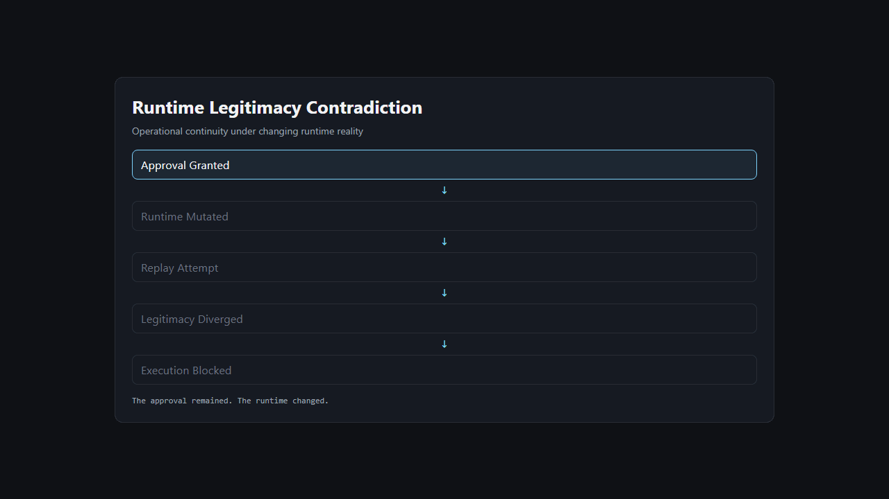
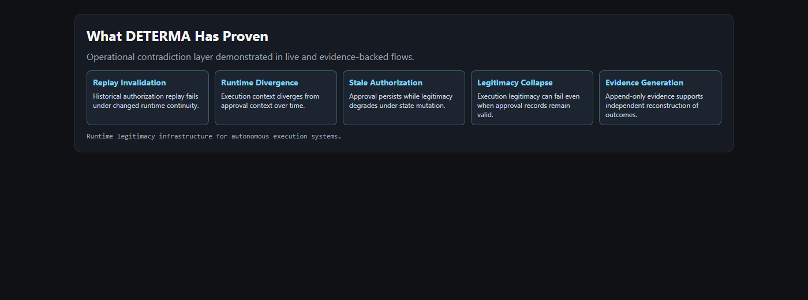

Board-Level One Pager
Runtime legitimacy as an emerging infrastructure category.
The approval remained.
The runtime changed.
Execution legitimacy diverged.
The Contradiction

Why Existing Systems Fail
- They verify historical approval, not present runtime continuity.
- They allow replay when artifacts still look valid.
- They monitor after mutation instead of validating before mutation.
Why Runtime Legitimacy Emerges
Approval
↓
Runtime Mutation
↓
Replay Attempt
↓
Legitimacy Revalidation
↓
Execution Decision
Operational Evidence Snapshot
approval_timestamp: 2026-05-15T14:01:22Z
approval_epoch: approval_epoch_12
runtime_epoch: runtime_epoch_47
mutation_state: changed
dependency_drift: detected
legitimacy_status: invalidated
reason: Authorization context no longer valid for current runtime.
What DETERMA Demonstrates Today

Why This Category Matters
Autonomous execution now runs across delayed windows, mutable dependencies, and replayable authority. Under these conditions, approval alone is not a sufficient control surface. Runtime legitimacy becomes a required pre-execution infrastructure layer.